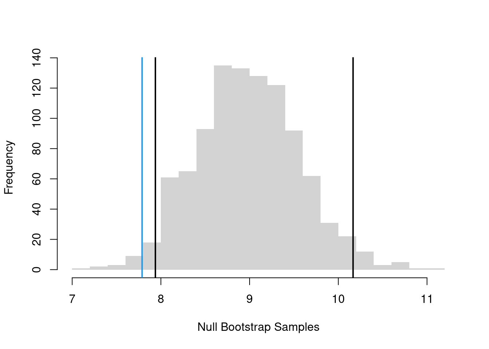
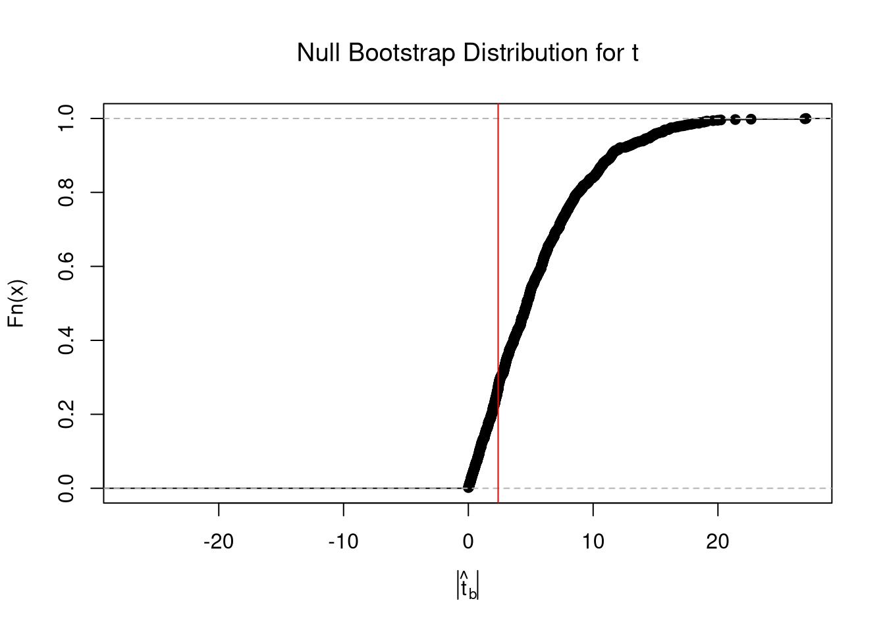
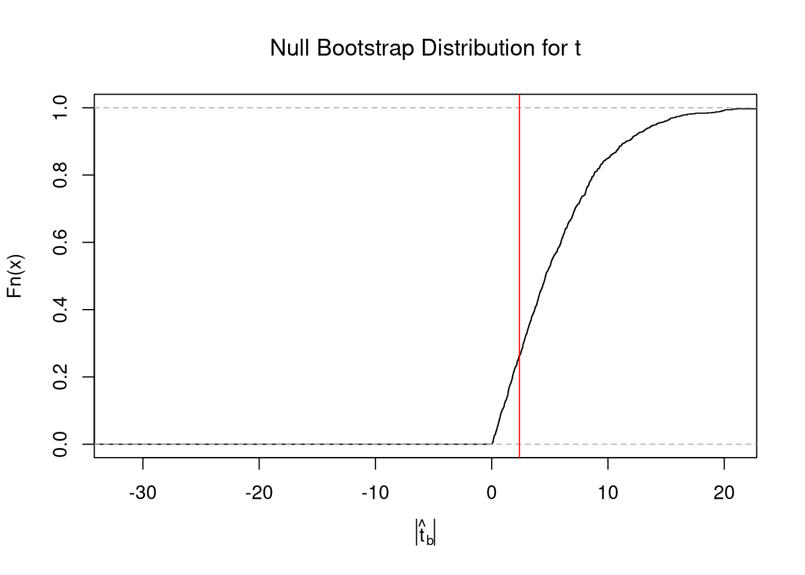

A \(p\)-value is the frequency you see something as extreme as your statistic when sampling from the null distribution. We want the probability mass in both tails: the random variable \(M\) that is at least as extreme (far from the null mean of \(9\)) as our observed sample mean \(\hat{M}\). \[\begin{eqnarray}
Prob( |M - \mu| \geq |\hat{M} - \mu| \mid \mu = 9 )
&\approx& Prob( |M^{\text{boot}}- \mu^{\text{boot}}| \geq |\hat{M}- \mu^{\text{boot}}| \mid \mu^{\text{boot}} = 9) \\
&=& 1-\hat{F}^{|\text{boot}|}_{0}(|\hat{M}-9|),
\end{eqnarray}\] where \(\hat{F}^{|\text{boot}|}_{0}\) is the ECDF of \(|M^{\text{boot}}- \mu^{\text{boot}}|\).
The bootstrap idea here is to approximate \(M-\mu\), the difference between the sample mean \(M\) and the unknown theoretical mean \(\mu\), with the difference between the bootstrap mean \(M^{\text{boot}}\) and the sample mean, \(M^{\text{boot}}-M\).
Note
Code
sample_dat <- USArrests[,'Murder']sample_mean <-mean(sample_dat)set.seed(1)# Bootstrap NULL: mean=9# Bootstrap shift: center each bootstrap resample so that the distribution satisfies the null hypothesis on average.mu <-9bootstrap_means_null <-vector(length=999)for(b inseq_along(bootstrap_means_null)){ dat_b <-sample(sample_dat, replace=T) mean_b <-mean(dat_b) + (mu - sample_mean) # impose the null via Bootstrap shift bootstrap_means_null[b] <- mean_b}hist(bootstrap_means_null, breaks=25, border=NA,main='',xlab='Null Bootstrap Samples')ci_95 <-quantile(bootstrap_means_null, probs=c(.025, .975)) # critical regionabline(v=ci_95, lwd=2)abline(v=sample_mean, lwd=2, col=4)
Code
# Two-Sided Test, ALTERNATIVE: mean < 9 or mean >9# Visualize Two Sided Prob. & reject region boundarypar(mfrow=c(1,2))hist(bootstrap_means_null-mu,freq=F, breaks=20,border=NA,main='',xlab=expression('Null Bootstrap for M - '~mu))abline(v=sample_mean-mu, col=4)ci_95 <-quantile(bootstrap_means_null-mu, probs=c(0.025,.975))abline(v=ci_95, lwd=2)# Equivalent Visualizationboot_absval <-abs(bootstrap_means_null-mu)Fhat_abs0 <-ecdf(boot_absval)plot(Fhat_abs0,main='',xlab=expression('Null Bootstrap for |M - '~mu~'|'))abline(v=abs(sample_mean-mu), col=4)# with Two Sided Probabilityp2 <-1-Fhat_abs0( abs(sample_mean-mu) )title( paste0('p=', round(p2,3)))

Caveats.
Beware that a common misreading of the \(p\)-value as “the probability the null is true”. That is false.
Often, one may also see or hear “\(p<.05\): statistically significant” and “\(p>.05\): not statistically significant”. That is decision making on purely statistical grounds, and it may or may not be suitable for your context. You simply need to know that whoever says those things is using \(5\%\) as a critical value to reject an alternative hypothesis.
Code
# Purely-Statistical Decision Making # via Two Sided Testif(p2 >.05){print('fail to reject the null that mean=9, at the 5% level')} else {print('reject the null that mean=9 in favor of either <9 or >9, at the 5% level')}## [1] "reject the null that mean=9 in favor of either <9 or >9, at the 5% level"
Also note that the \(p\)-value is itself a function of data, and hence a random variable that changes from sample to sample. Given that the \(5\%\) level is somewhat arbitrary, and that the \(p\)-value both varies from sample to sample and is often misunderstood, it makes sense to give \(p\)-values a limited role in decision making.
A \(t\)-value standardizes the approach for hypothesis tests of the mean. For any specific sample, we compute the estimate \[\begin{eqnarray}
\hat{t}=(\hat{M}-\mu)/\hat{S},
\end{eqnarray}\] which corresponds to the estimator \(t = (M - \mu) / \mathbb{s}(M)\), which varies from sample to sample. We can use bootstrapping to estimate the variability of the \(t\) statistic, just like we did with the mean.
Tip
Code
#null hypothesismu <-9# t statistic jackknife_means <-vector(length=length(sample_dat))for(i inseq_along(jackknife_means)){ jackknife_means[i] <-mean(dat_b[-i])}sample_t <- (sample_mean - mu)/sd(jackknife_means)# Boostrap Null Distributionbootstrap_t_null <-vector(length=999)for(b inseq_along(bootstrap_t_null)){ dat_b <-sample(sample_dat, replace=T) mean_b <-mean(dat_b) + (mu - sample_mean) # impose the null by recentering# Compute t stat using jackknife ses (same as above) jackknife_means_b <-vector(length=length(dat_b))for(i inseq_along(jackknife_means_b)){ jackknife_means_b[i] <-mean(dat_b[-i]) } jackknife_se_b <-sd( jackknife_means_b ) jackknife_t_b <- (mean_b - mu)/jackknife_se_b bootstrap_t_null[b] <- jackknife_t_b}# Plot the null distribution and CIpar(mfrow=c(1,2))hist(bootstrap_t_null, border=NA, breaks=50,freq=F, main=NA, xlab='Null Bootstrap for t')abline(v=sample_t, col=4)ci_95 <-quantile(bootstrap_t_null, probs=c(0.025,0.975) )abline(v=ci_95, lwd=2)# Compute the p-value for two-sided testFhat0 <-ecdf(abs(bootstrap_t_null))plot(Fhat0, xlim=range(bootstrap_t_null, sample_t),xlab='Null Bootstrap for |t|',main='')abline(v=abs(sample_t), col=4)p <-1-Fhat0( abs(sample_t) )title( paste0('p=', round(p,3)) )
Code
if(p >.05){print('fail to reject the null that mean=9, at the 5% level')} else {print('reject the null that mean=9 in favor of either <9 or >9, at the 5% level')}## [1] "reject the null that mean=9 in favor of either <9 or >9, at the 5% level"
There are several benefits to this statistic:
uses the same statistic for different hypothesis tests
makes the statistic comparable across different studies
removes dependence on unknown parameters by normalizing with a standard error
makes the null distribution theoretically known asymptotically (approximately)
The last point implies we are typically dealing with a normal distribution that is well-studied, or another well-studied distribution derived from it. We will discuss this more when comparing means.
Quantiles and Shape Statistics.
Bootstrap allows hypothesis tests for any statistic, not just the mean, without relying on parametric theory. For example, the above procedures generalize from means to quantile statistics like medians.
Code
# Test for Median Differences (Impose the Null)# Bootstrap Null Distribution for the median# Each Bootstrap shifts medians so that median = q_nullq_obs <-quantile(sample_dat, probs=.5)q_null <-7.8bootstrap_quantile_null <-vector(length=999)for(b inseq_along(bootstrap_quantile_null)){ x_b <-sample(sample_dat, replace=T) #bootstrap sample q_b <-quantile(x_b, probs=.5) # median d_b <- q_b - (q_obs-q_null) #impose the null bootstrap_quantile_null[b] <- d_b }# Note that you could also standardize like the t value. E.g., # jackknife_quantiles_b <- vector(length=length(dat_b))# se_b <- sd(jackknife_quantiles_b)# d_b <- d_b/se_b# 2-Sided Test for Medianshist(bootstrap_quantile_null-q_null, border=NA, freq=F, xlab='Null Bootstrap',font.main=1, main='Medians (Impose Null)')median_ci <-quantile(bootstrap_quantile_null-q_null, probs=c(.025, .975))abline(v=median_ci, lwd=2)abline(v=q_obs-q_null, lwd=2, col=4)
Code
# 2-Sided Test for Median Difference## Null: No Median Difference1-ecdf( abs(bootstrap_quantile_null-q_null))( abs(q_obs-q_null) ) ## [1] 0.5695696
8.3 One-Sided Tests
Above, we tested whether the observed statistic is either extremely high or low. This is known as a two-sided test. There are also two one-sided tests (left tail: observed statistic is extremely low, right tail: observed statistic is extremely high). For a concrete example, consider whether the mean statistic, \(M\), is centered on a theoretical value of \(\mu=9\) for the population. If your null hypothesis is that the theoretical mean is nine, \(H_{0}: \mu =9\), and you calculated the mean for your sample as \(\hat{M}\), then you can consider any one of these three alternative hypotheses:
\(H_{A}: \mu \neq 9\), a two-tail test
\(H_{A}: \mu < 9\), a left-tail test
\(H_{A}: \mu > 9\), a right-tail test
One-Sided Intervals.
A one-sided test is associated with an interval that shifted to one side, containing one tail rather than the middle. For example, a left tail test that “inverts a CI” uses the interval \((-\infty, q_{0.95}]\), where \(q_{0.95}\) is the \(95^{\text{th}}\) percentile of the bootstrap distribution. If the hypothesized value falls inside that interval, then we fail to reject the null (at the \(5\%\) level), otherwise we reject the null (it seems extremely unlikely that we would find such a large value). A left tail test that “inverts a CI” uses the interval \([q_{0.05}, \infty)\), where \(q_{0.05}\) is the \(5^{\text{th}}\) percentile of the bootstrap distribution.
Tip
Here is right-tail Test example
Code
# Bootstrap Distributionset.seed(1) # to be replicablebootstrap_means <-vector(length=9999)for(b inseq_along(bootstrap_means)){ dat_id <-seq(1,length(sample_dat)) boot_id <-sample(dat_id, replace=T) dat_b <- sample_dat[boot_id] # c.f. jackknife mean_b <-mean(dat_b) bootstrap_means[b] <-mean_b}# ALTERNATIVE: mean > 9# Visualize One Sided Prob. & reject region boundaryhist(bootstrap_means, border=NA, breaks=50,freq=F, main=NA, xlab='Null Bootstrap')abline(v=sample_mean, col=4)ci_95 <-quantile(bootstrap_means, probs=c(0.05,1) )abline(v=ci_95, lwd=2)

Advanced and Optional
For me at least, “invert a CI” is the most intuitive way to conduct hypothesis test using intervals. However, there are “Impose the Null” intervals, which are reversed, that correspond more closely to \(p\)-values.
A right tail test that “imposes the null” uses the interval \((-\infty, q_{0.95}]\), where \(q_{0.95}\) is the \(95^{\text{th}}\) percentile of the null bootstrap distribution: If the observed value falls inside that interval, then we fail to reject the null (at the \(5\%\) level), otherwise we reject the null (it seems extremely unlikely that we would find such a small value). A left tail test that “imposes the null” uses the interval \([q_{0.05}, \infty)\), where \(q_{0.05}\) is the \(5^{\text{th}}\) percentile of the null bootstrap distribution. Referring to the hypothetical value generally as \(\mu_0\) instead of the particular number \(9\), we can summarize the one-sided decision rules as
Tail
Reject when
Fail to reject when
Impose the Null (shifted/bootstrap-null)
Right-tail \(H_A: \mu > \mu_0\)
\(\hat{M} > q^{\text{null}}_{0.95}\)
\(\hat{M} \le q^{\text{null}}_{0.95}\)
Left-tail \(H_A: \mu < \mu_0\)
\(\hat{M} < q^{\text{null}}_{0.05}\)
\(\hat{M} \ge q^{\text{null}}_{0.05}\)
Invert a CI (percentile CI)
Right-tail \(H_A: \mu > \mu_0\)
\(\mu_0 < q^{\text{boot}}_{0.05}\)
\(\mu_0 \ge q^{\text{boot}}_{0.05}\)
Left-tail \(H_A: \mu < \mu_0\)
\(\mu_0 > q^{\text{boot}}_{0.95}\)
\(\mu_0 \le q^{\text{boot}}_{0.95}\)
One-Sided \(p\)-values.
The \(p\)-value for a one-sided test is more straightforward to implement via a bootstrap null distribution.
For a left-tail test, we examine \[\begin{eqnarray}
p = Prob( M < \hat{M} \mid \mu = 9 )
&\approx& Prob( M^{\text{boot}} < \hat{M} \mid \mu^{\text{boot}} = 9 ) = \hat{F}^{\text{boot}}_{0}(\hat{M}),
\end{eqnarray}\] where \(\hat{F}^{\text{boot}}_{0}\) is the ECDF of the bootstrap null distribution. We reject the null if \(p < 0.05\) at the \(5\%\) level, and otherwise fail to reject.
For a right-tail test, we examine \(p=Prob( M > \hat{M} \mid \mu = 9 ) \approx 1-\hat{F}^{\text{boot}}_{0}(\hat{M})\).
Code
# Right-tail Test, ALTERNATIVE: mean > 9# Equivalent Visualization with p-valueFhat0 <-ecdf(bootstrap_means_null) # Look at right tailplot(Fhat0,main='',xlab='Null Bootstrap')abline(v=sample_mean, col=4)p1 <-1-Fhat0(sample_mean) #Compute right tail prob: 0.987title( paste0('p=', round(p1,3)))

Code
if(p1 >.05){print('fail to reject the null that mean=9, at the 5% level')} else {print('reject the null that mean=9 in favor of >9, at the 5% level')}## [1] "fail to reject the null that mean=9, at the 5% level"
Tip
Notice that the recentering adjustment affects two-sided tests (because they depend on distance from the null mean) but not one-sided tests (because adding a constant does not change rank order). Specifically, \(p = Prob( M < \hat{M} \mid \mu = 9 ) = Prob( M - \mu < \hat{M} - \mu \mid \mu = 9 )\). That is intuitively also why the \(t\)-value can be used for both one and two-sided hypothesis tests.
Code
# See that the "recentering" matters for two-sided testsecdf( abs(bootstrap_means_null-mu) )( abs(sample_mean-mu) )## [1] 0.966967ecdf( abs(bootstrap_means_null) )( abs(sample_mean) )## [1] 0.01301301# See that the "recentering" doesn't matter for one-sided onesecdf( bootstrap_means_null-mu)( sample_mean-mu)## [1] 0.01301301ecdf( bootstrap_means_null )( sample_mean)## [1] 0.01301301